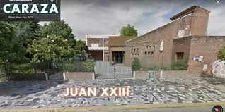

Juan XXIII

03/04/2020 - 06/03/2025
En la escuela secundaria con orientación en Economía se adquirieron conocimientos básicos sobre administración, contabilidad, finanzas y funcionamiento de empresas. También se desarrollaron habilidades en el análisis de situaciones económicas, interpretación de datos, trabajo en equipo y comprensión de conceptos relacionados con el mercado, la producción y la gestión de recursos.